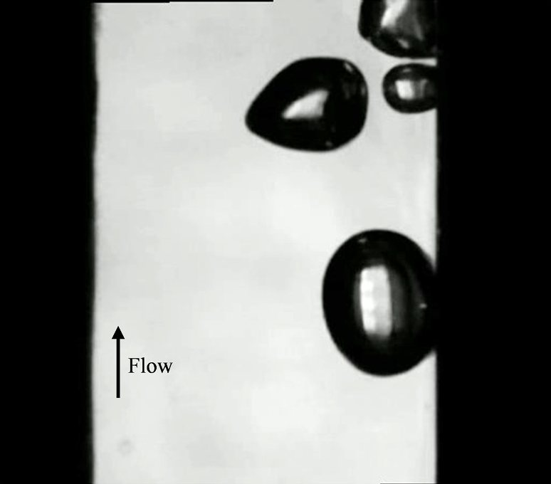
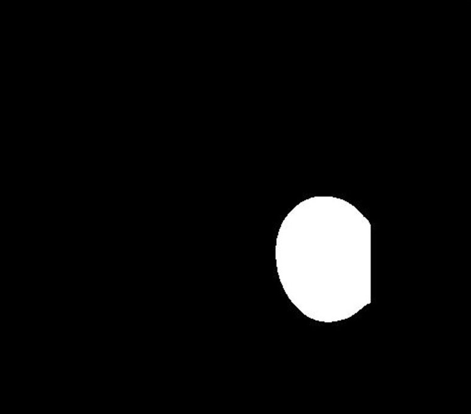
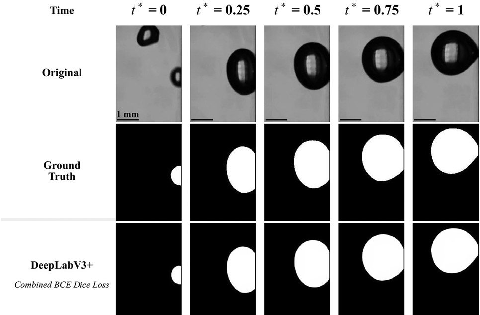
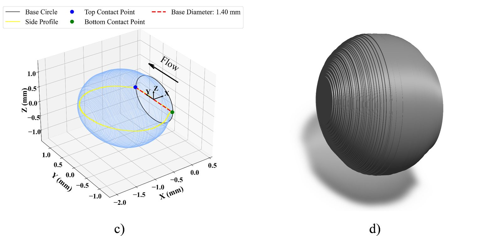

Researchers measured bubbles by hand-tuning image thresholds, experiment by experiment. I replaced that with a segmentation model, used the masks to predict how bubbles grow, and helped turn it all into equations anyone can use without a lab.
When liquid boils on a heated wall, vapor bubbles form, grow and slide away. How they do that sets how well heat is removed, which matters for everything from power plants to chip cooling. Measuring them means filming at high speed and outlining every bubble in every frame.
Until then the lab did this with classic image processing: manual thresholds, and the channel walls cropped out by hand for each experiment. It was slow and needed a person in the loop.


raw framemaskI benchmarked seven segmentation architectures, from U-Net variants to DeepLabV3+, PSPNet, YOLO-Seg and SAM, each with three loss functions. Nobody had tested loss choices on this problem, and it turned out to matter: the right loss moved some models a long way.
DeepLabV3+ with a combined BCE-Dice loss came out on top at 0.982 IoU, and it held up across the whole bubble life cycle, from the tiny nucleating bubble to the large one about to depart.

With clean masks I could measure bubble size, aspect ratio and contact angles automatically. I then trained regressors to predict those parameters from the experiment's bulk inputs and normalized time, so you can estimate bubble behaviour without filming at all. Together, the two stages became the AI Thermal Fluids paper.
Engineers want an equation, not a model file. I searched for compact empirical correlations with Differential Evolution over 4,772 samples, reaching 7.9 to 14.6% prediction error across five bubble parameters and beating the published correlations.
Along the way we needed a better bubble volume. A 2D image only shows a side profile, so I reconstructed the 3D bubble from its profile and base circle and integrated with the Divergence theorem. That cut equivalent-diameter error to 0.48%.

How to work with a physical-sciences team: a mechanical PhD student ran the experiments and I owned the ML. How to write a paper that survives review. And that I like building tools other researchers will rely on for their own data. I came in on Saturdays because of that, not deadlines.